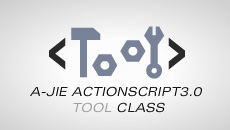
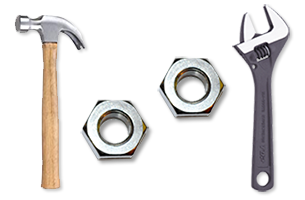

简介
-tool-library-for-as3是一个灵活的、功能丰富的ActionScript3.0工具库。它是各种小工具的集合，几乎涉及到了日常开发的方方面面。使用它可以帮你有效的简化工作流程、节约工作时间、提高工作效率。DEMO.zip里包含了该库的部分例子（仅仅是一部分）。

类结构
xml:
XMLLoader.as ---------------------- 加载xml的类
xmlToArray.as ---------------------- xml转换Array
util:
ArrayUtil.as ---------------------- 数组辅助功能
setFrameout.as ---------------------- 延迟（帧）函数
clearFrameout.as ---------------------- 清除延迟函数
delayOut.as ---------------------- 延迟（秒）函数
EnterFrame.as ---------------------- 类似as2enterFrame
NumberUtil.as ---------------------- 逐个递加数字
setFor.as ---------------------- for循环函数体
tryRun.as ---------------------- try catch运行函数
url:
Address.as ---------------------- 设置为首页/添加收藏夹/获取地址栏地址并且复制到右键
URL.as ---------------------- 跳转html/获取文件地址
Cookies.as ---------------------- shareObject类似cookies
HtmCookies.as ---------------------- 真实cookies
JavaScript.as ---------------------- javascript交互
HTTPS.as ---------------------- url随机数
SNS.as ---------------------- 各个sns网站的分享
timeline:
prevPlay.as ---------------------- 反向/正向播放mc
Timeline.as ---------------------- 处理时间轴
time:
TimeClick.as ---------------------- 计时器
TimeCount.as ---------------------- 计数器
TimeFormat.as ---------------------- 格式化时间
text:
BitmapText.as ---------------------- bitmap文本副本
setDText.as ---------------------- 快速设置动态文本
replaceAll.as ---------------------- 替换字符
MiniFont.as ---------------------- mini字体库
test:
MainLoad.as ---------------------- 测试框架
stage:
AutoSize.as ---------------------- 自适应屏幕尺寸
FullScreen.as ---------------------- 控制全屏
StageInit.as ---------------------- 初始化场景
object:
AClass.as ---------------------- 获取对象所属的类
all.as ---------------------- 全体对象调整
some.as ---------------------- 遍历并调用对象集属性
move:
BasicMove.as ---------------------- 简单的运动方式
mouse:
Menu.as ---------------------- 右键菜单
MouseCheck.as ---------------------- 检查鼠标是否移动
load:
GroupLoader.as ---------------------- 列队加载一组元素
MCLoader.as ---------------------- loader组件
ProLoader.as ---------------------- 预加载
geom:
Rectangular.as ---------------------- 控制目标在矩形区域内
RectangleUI.as.as ---------------------- RectangleUI工具条
events:
BasicEvent.as ---------------------- 基本事件模式
ButtonEvent.as ---------------------- button相关的事件
FLVEvent.as ---------------------- FLV相关的事件
LoadEvent.as ---------------------- load相关的事件
ListEvent.as ---------------------- list相关的事件
EventManager.as ---------------------- 强大的事件管理器
draw:
Painter.as ---------------------- 绘图类
Pen.as ---------------------- 画笔
SmoothCurve.as ---------------------- 生成光滑曲线
debug:
Debug.as ---------------------- 5K Debug
trace.as ---------------------- 覆写trace
traced.as ---------------------- traced输出
data:
DataInterface.as ---------------------- 简化flash和后台交互
ValueMode.as ---------------------- 后台模式
ListPage.as ---------------------- 实现flash列表相关功能
display:
addChildAndInit.as ---------------------- 添加显示对象并初始化
ContainerMovieClip.as ------------------ movieClip容器，一般用来存放加载的
DisplayGroup.as ---------------------- 显示对象群组
DisplayHelper.as ---------------------- 处理显示对象简便操作
hitTestObjects.as ---------------------- 像素级碰撞检测
LoaderSprite.as ---------------------- 处理Loader相关的Sprite
Registration.as ---------------------- 变换注册点
SubMovieClip.as ---------------------- movieClip基类
QMC.as ---------------------- 快速MovieClip
bitmap:
GoodBmp.as ---------------------- 新的bitmap
color:
Color.as ---------------------- 颜色工具
quick:
QuickMovieClipArray.as ---------------------- 保存QMC对象
shell:
CoreShell.as ---------------------- 控制显示对象的外壳
fp10(仅支持fp10.0以上版本):
a3d:(--A3D--)
A3D.as ---------------------- 参数配置
Ball.as ---------------------- 球
Box.as ---------------------- 盒子
Camera3D.as ---------------------- 摄像机
Container3D.as ---------------------- 3d容器
Plane.as ---------------------- 基本面
Scene3D.as ---------------------- 主场景
core:
FP10Object3d.as ---------------------- 基本3d对象
IFP10Object3d.as ---------------------- 3D对象接口
Light.as ---------------------- 灯光
Material.as ---------------------- 材质
move:
Move.as ---------------------- 运动制作器
OrderTool.as ---------------------- Z轴排序器
zOrder.as ---------------------- Z轴排序函数
ToolMaker.as ---------------------- 3d工具制造器
fp10:
upfile
JPGLoader.as ---------------------- 本地图片上传保存
JPGEncoder.as ---------------------- 压缩为jpg
PNGEncoder.as ---------------------- 压缩为png
component:
button:
BasicButton.as ---------------------- 基本的按钮MODEL
AssociativeButton.as ---------------------- 串联按钮MODEL.
ParallelButton.as ---------------------- 并联按钮MODEL
LabelButton.as ---------------------- 加标签的按钮
TwoFaceButton.as ---------------------- 两帧型按钮
ButtonManage.as ---------------------- 按钮统一管理器
interactive:
DragComponent.as ---------------------- 拖动功能元件。
MouseFollow.as ---------------------- 一组对象的鼠标跟随
MouseFollowBg.as ---------------------- 跟随鼠标的背景
media:
FLVVideo.as ---------------------- FLV播放器
MP3Sound.as ---------------------- 简单mp3播放器
mouse:
Cursor.as ---------------------- 自定义鼠标指针
text:
InputText.as ---------------------- 设置输入文本
Typewriter.as ---------------------- 打字效果
ui:
BlackMask.as ---------------------- 全屏遮罩
TipBox.as ---------------------- 提示框TipBox
ScrollPane.as ---------------------- 滚动窗口组件
SliderLine.as ---------------------- 滚动条组件

联系
如果您对该类有任何问题，请给我发邮件a-jie.cn@msn.com，或者私信我的微博http://weibo.com/ajiecn。